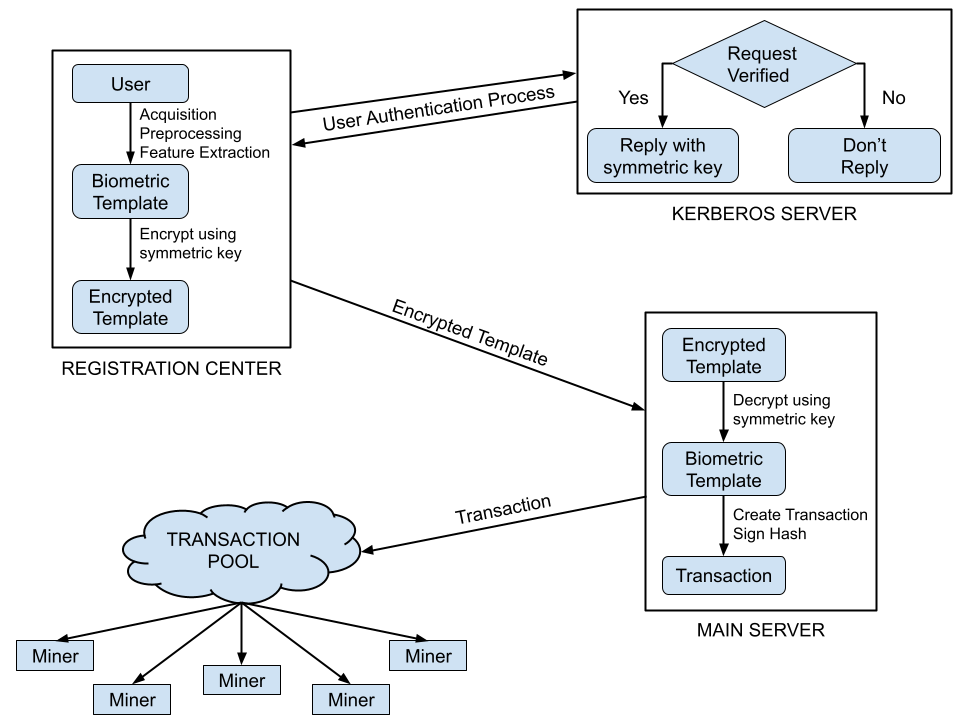

About
- Impressed and interested in the fields of Networks and Systems, especially concentrating on Distributed computing, Storage systems, Software Defined Networking, Virtualization and Cloud.
- Experience in Python, C, Java, Golang, Perl and Shell Scripting. Familiar with C++.
- High level familiarity of AWS and Azure Cloud Platforms (mainly focused on compute, network, storage and database based services).
- 3+ years of work experience in Citrix as a full stack developer working for the product of Citrix SD-WAN (Software Defined Wide Area Networking). My role mainly concentrated on innovating, developing and maintaining features in the areas of DNS as well as classification, routing, security and reporting of application traffic.
- 1 patent filed to USPTO (United States Patent and Trademark Office) with Citrix to improve large file storage access from Cloud PoPs.
Education
- University of California, Santa Cruz
- Master of Science (MS) in Computer Science and Engineering (Sep 2022 - Current)
- PES University, Bengaluru, India
- Bachelor of Technology (BTech) in Electronics and Communication Engineering (Aug 2015 - Aug 2019)
- Minors in Computer Science and Engineering (Aug 2016 - May 2018)
Academic Projects
- Implemented RSA public key cryptographic algorithm using Verilog and developed an ASIC (Application-Specific Integrated Circuit) design so that the hardware could be ideally added to the end network devices to ensure safe and secure data sharing capabilities while decreasing the processing power required by the devices.
- Researched and proposed secure storage of biometric data using Blockchain for distributed registration and access systems. As a proof of concept, using python, implemented the Kerberos authentication process for validating transactions from registration centers to enter data into the transaction pool and data retrieval from blockchain ledgers to access points. 
Work Experience
-
Citrix R&D India Pvt Ltd, Bengaluru, India
- Software Engineer 2
My role mainly concentrated on innovating, developing, and maintaining features in the areas of DNS as well as classification, routing, security, and reporting of application traffic. Occasionally delved into NAT, firewall filters, wan link provisioning for bug fixes and customer issues.
- Developed a feature to monitor health of internet links and consequently backhaul critical application traffic via stable MPLS links instead of direct breakout to internet upon detection of significant degradation.
- Devised an infrastructure to automatically push SaaS application signatures for traffic classification onto Citrix SD-WAN appliances from Citrix SD-WAN Orchestrator service on cloud. This enabled updating of the application signatures on the appliances without waiting for a new release.
- Research on integration of Citrix SD-WAN with Citrix ITM (Intelligent Traffic Management) for intelligent wan-link path selection for optimal delivery of internet-bound SaaS application traffic.
- 1 patent filed to USPTO (United States Patent and Trademark Office) to improve large file storage access on cloud PoPs.
- Live environment analysis, debugging and resolution of 20+ critical customer issues.
- Software Engineer 1
Took up ownership of Deep Packet Inspection classification engine and DNS features for Citrix SD-WAN.
- Classification and Optimization of Citrix Managed Desktops traffic and Web proxy traffic passing via Citrix Gateway Service.
- Designed and developed a “Smart Networking Infrastructure” to create on demand Citrix SD-WAN networks in private cloud (OpenStack) and configure them via SD-WAN Orchestrator on the basis of a digitally visualized network topology.
- Added enhancement of IPv6 support for first packet classification in Citrix SD-WAN for routing of Office365 and other SaaS application traffic.
- Software Engineering Intern
Citrix SD-WAN is a wan-edge connectivity solution and Orchestrator is its management service in cloud.
- Implemented Behavioral Driven Development validation framework for SD-WAN Orchestrator which provided a solid base for Automation and helped to offload the majority of the manual testing.
- Researched and compared open source SDN projects such as ONOS (Open Network Operating System) and POX (Python-based SDN controller) with Citrix SD-WAN.
- Contributed to schema migration initiative to standardize Orchestrator APIs as per Citrix guidelines.
Professional Development Certifications
- AWS Partner: AWS Cloud Practitioner Essentials.
- Citrix certified security track - Level5 - Purple Belt in “Secure Cloud Development”.
- Citrix Learning Center course on “Docker with Kubernetes”.
- Coursera certified course on “Machine Learning” offered by Stanford University.
Patents
- US17/841,135 - An optimal way to store multiple copies of files in local PoPs.
Hobbies and Interests
- I actively follow Football, F1, Tennis and I like playing Cricket and Badminton. Hit me up if you are interested in the same.
- Geek of Fantasy, Science Fictions and Thriller novels. My favorite authors include Jon Abercrombie, George RR Martin, Dan Brown, Christopher Paolini etc.